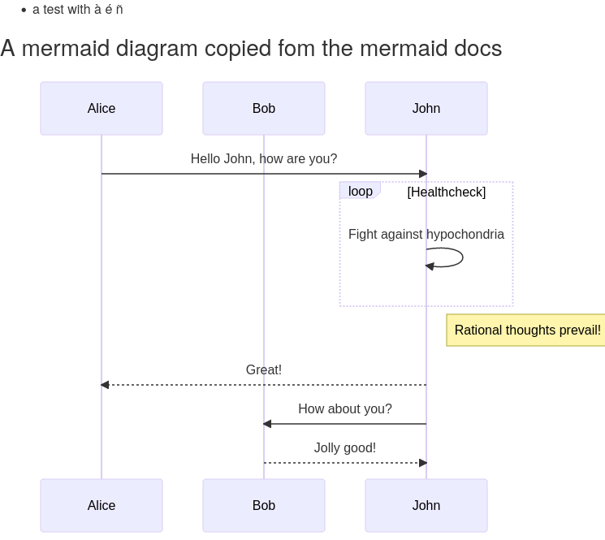
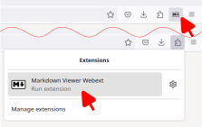

Manual or automatic rendering
Markdown Viewer now allows the possibility to render pages manually through a button in the address bar.

If you prefer pages being rendered automatically, Markdown Viewer will need access to all pages that match markdown file names to check they are renderable.
For pages that prevent checking whether the they contain renderable markdown, through e.g. security policies, the address bar button remains available.
Markdown Viewer extras

The add-on can display a menu on the rendered page, with:
- a table of contents
- style selection,
- an HTML download link,
- and a link to view the page source.
Markdown Viewer also includes a number of markdown-it plugins to extend the markdown standard, that can be enabled or disabled in the settings page (mermaid diagrams, emojis, footnotes, and more!).
You can also specify custom CSS to apply on every page.
New Markdown Viewer features
 In addition to previous features (menu, table of contents, style selection) and plug-ins (footnotes, front matters, etc.), Markdown Viewer can now render mermaid diagrams
Markdown Viewer now also renders markdown in a sandboxed iframe, for improved privacy and security protection.
Extension page
In version 2, Markdown Viewer can render local markdown files* in an extension page, which:
- improves out-of-the-box local file support,
- avoids slowing down the browser on large files by using worker threads,
- supports a
ext+view-markdown:protocol
file:// URLs. Unfortunately, cross-origin permissions prevent accessing many markdown files on the web from the extension page.
Unfortunately due to limitations of add-on permissions, the extension page can not access markdown pages on the web with cross-origin headers, even when the access is manually triggered by a user.
Local file preference
Some functionalities are slightly reduced with the extension page:
- Opening a file requires granting access with a file picker
- Linking to page source is not possible
- Local images are not displayed
Therefore, you can prefer injecting scripts into local markdown pages by default, without using the extension page.
For this, Markdown Viewer will need Firefox to consider markdown files as text (or Firefox will attempt to download these files instead of displaying them).
Manual access to extension page
The extension page is always accessible! To have Markdown Viewer prompt for a local file, use the toolbar (or overflow-menu) button, or go to
ext+view-markdown:.

You can also go directly specify which page to open by providing the path, e.g.:ext+view-markdown:file://C:/path/to/file.md
This is quite useful to link to local markdown pages when the path is known, but linking to actual local files is not allowed.